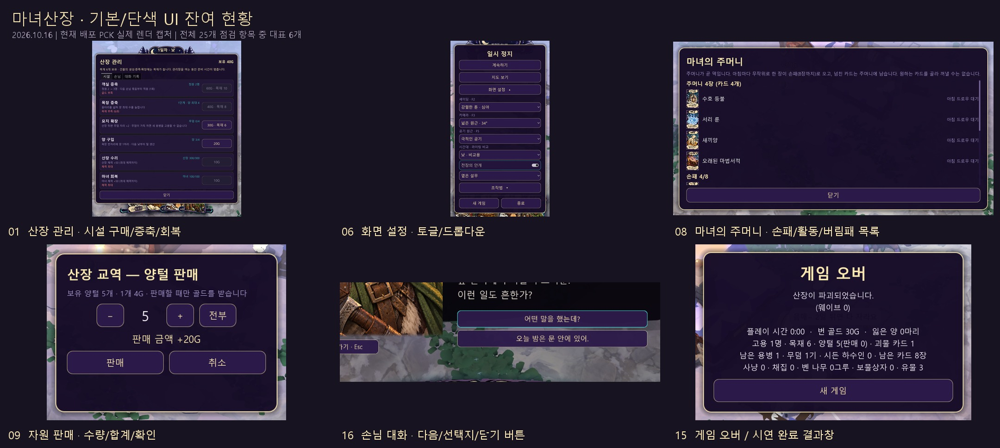
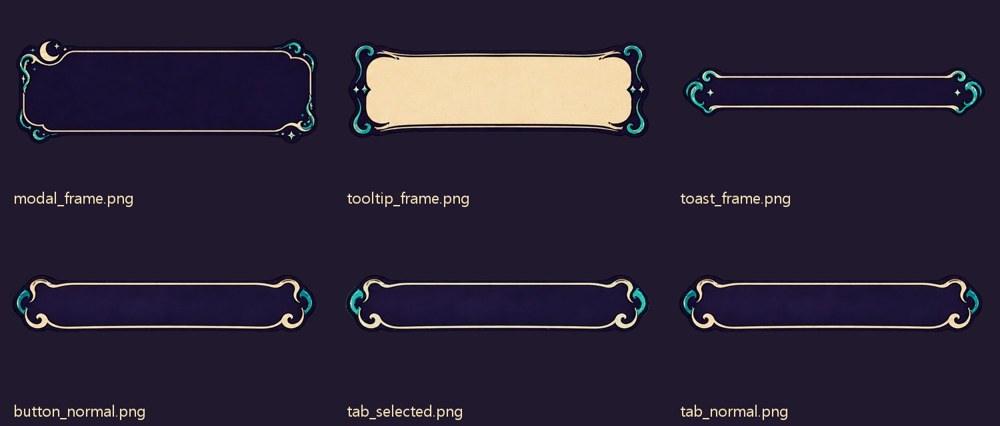

01단색 UIP1
산장 관리 · 시설 구매/증축/회복
창 전체와 6개 시설 행, 가격/구매 버튼, 닫기 버튼이 단색 프레임입니다. 시설 전용 아이콘·장식·그림 버튼이 연결되지 않았습니다.
연결 후보/추가 아트: modal_frame · row_background · button_*
코드 근거: godot/scripts/ui/hud.gd:217func _build_lodge_panel
플레이어용 UI 25개 점검 항목에서 기본 위젯 또는 전용 그래픽 없는 단색 표현을 확인했습니다. 같은 창 안의 탭·행·버튼을 따로 세었으므로 25개가 각각 별도 화면이라는 뜻은 아닙니다.

art/ui/moon-runes-v01/common/의 모달·툴팁·토스트·버튼·탭·스크롤 PNG는 존재하지만, 게임의 공통 테마는 StyleBoxFlat을 사용합니다. 현재 godot/assets/ui/moon_runes/에는 approved/와 interim/만 있고 최종 runtime/ 및 common/이 설치되지 않았습니다.기본 위젯: 탭·토글·화살표처럼 엔진 기본 모양이 남은 곳. 단색 UI: 프로젝트 색·글꼴은 적용됐지만 전용 그림 프레임/버튼 대신 사각형·둥근 패널을 그리는 곳. 단색 표현 자체를 버그라고 단정하지는 않습니다.
현재 build/WitchsLodge.pck를 Godot 4.7.2의 실제 Vulkan Forward+ 렌더러로 실행해 1774×887 화면을 캡처했습니다. 화면 전환은 별도 감사 스크립트가 기존 게임 함수를 호출해 재현했습니다. 자원/손패/체력/승패 등은 캡처용 임시 실행 상태이며 실제 플레이 저장 상태를 읽거나 바꾼 것이 아닙니다. 코드 근거는 현재 작업트리의 파일/행입니다.
메인 HUD 8개 그룹, 시설·손님·기록, 일시정지·설정·조작법, 주머니 4개 구역, 판매·고용·카드 설명/드래그, 지도·알림, 대화와 선택지, 체력/작업/말풍선, 유물·상자·마법서, 묘지/가시 이름표, 승패 및 개발 메뉴를 점검했습니다. 게임 UI/로직 및 배포 PCK는 수정하지 않았습니다.
| 번호 | 위치 | 현재 표현 | 우선순위 |
|---|---|---|---|
| 01 | 산장 관리 · 시설 구매/증축/회복 | 단색 UI | P1 |
| 02 | 산장 관리 · 시설/손님/대화 기록 탭 | 기본 위젯 | P1 |
| 03 | 산장 관리 · 손님 목록 | 단색 UI | P1 |
| 04 | 산장 관리 · 대화 기록 | 단색 UI | P1 |
| 05 | 일시정지 메뉴 | 단색 UI | P1 |
| 06 | 화면 설정 · 토글/드롭다운 | 기본 위젯 + 단색 | P1 |
| 07 | 조작법 펼침 영역 | 단색 UI | P2 |
| 08 | 마녀의 주머니 · 손패/활동/버림패 목록 | 단색 UI | P1 |
| 09 | 자원 판매 · 수량/합계/확인 | 단색 UI | P1 |
| 10 | 화면 왼쪽 · 고용 제안 | 단색 UI | P1 |
| 11 | 카드 설명과 HUD 툴팁 | 단색 UI | P1 |
| 12 | 카드 드래그 · 사용 가능/불가 안내 | 단색 UI | P2 |
| 13 | 상단 토스트 · 성공/실패 알림 | 단색 UI | P1 |
| 14 | 탐색 지도 · 창/닫기/지도 표식 | 단색 UI | P2 |
| 15 | 게임 오버 / 시연 완료 결과창 | 단색 UI | P1 |
| 16 | 손님 대화 · 다음/선택지/닫기 버튼 | 단색 UI | P1 |
| 17 | 대화 준비 알림 · 말풍선/관리 배지 | 단색 UI | P2 |
| 18 | 월드 체력 바 · 적/마녀/산장/양/아군 | 단색 UI | P2 |
| 19 | 월드 행동 이름표 · 임무/털 수확/고용/카드 드롭 | 단색 UI | P2 |
| 20 | 양털 깎기 진행 게이지 | 단색 UI | P2 |
| 21 | 새끼양 성장 안내 말풍선 | 단색 UI | P2 |
| 22 | 용병 자원 소지 말풍선 | 단색 UI | P2 |
| 23 | 획득 유물 슬롯 | 단색 UI | P2 |
| 24 | 용병 카드 · 계약 인물 이름표 | 단색 UI | P2 |
| 25 | 손님 도착 · 인원 예고 띠 | 단색 UI | P2 |
P1은 주요 화면/공통 부품의 그래픽 연결, P2는 보조 정보/월드 UI의 표현 정리 우선순위입니다. 아래 이미지는 문제 영역을 확대한 실제 캡처이며, 누르면 전체 원본을 볼 수 있습니다.
창 전체와 6개 시설 행, 가격/구매 버튼, 닫기 버튼이 단색 프레임입니다. 시설 전용 아이콘·장식·그림 버튼이 연결되지 않았습니다.
연결 후보/추가 아트: modal_frame · row_background · button_*
코드 근거: godot/scripts/ui/hud.gd:217func _build_lodge_panel
TabContainer/TabBar 전용 스타일이 테마에 정의되지 않아 회색 기본 탭을 그대로 사용합니다. 선택/비선택 탭 그래픽이 아트 폴더에 있습니다.
연결 후보/추가 아트: tab_normal · tab_selected
코드 근거: godot/scripts/ui/hud.gd:234lodge_tabs = TabContainer.new()
손님 초상은 적용됐습니다. 목록 배경·상태 행·이야기 듣기/고용 버튼·닫기는 공통 단색 UI입니다.
연결 후보/추가 아트: modal_frame · row_background · button_*
코드 근거: godot/scripts/ui/guest_interactions.gd:194func _sync_hub
기록은 단색 행과 일반 텍스트 목록으로 표시됩니다. 기록 페이지/카드 프레임, 탭, 닫기 버튼의 전용 그래픽이 없습니다.
연결 후보/추가 아트: modal_frame · row_background · tab_*
코드 근거: godot/scripts/ui/guest_interactions.gd:246for record in game.guest_events.history
계속하기·지도 보기·설정·조작법·새 게임·종료가 같은 단색 버튼입니다. 메인 HUD의 그림형 일시정지 아이콘과 내부 메뉴의 표현 수준이 다릅니다.
연결 후보/추가 아트: modal_frame · button_*
코드 근거: godot/scripts/ui/hud.gd:293func _build_pause
전장의 안개 CheckButton은 전용 테마/아이콘 지정이 없습니다. OptionButton은 배경색만 바뀌고 화살표 아이콘은 기본값입니다. 펼친 메뉴도 단색 패널입니다.
연결 후보/추가 아트: button_* · scroll_* (토글/화살표 전용 상태는 별도 확인)
코드 근거: godot/scripts/ui/hud.gd:396func _build_screen_styles
일시정지 창 안에 일반 라벨로 나열됩니다. 키캡·입력 아이콘·조작법 전용 패널 없이 텍스트로만 구성됩니다.
연결 후보/추가 아트: modal_frame · divider (키캡은 별도)
코드 근거: godot/scripts/ui/hud.gd:319pause_help = _label
카드 썸네일과 버림패 아이콘은 있습니다. 창·섹션·목록 행·닫기는 단순 UI이며 전용 덱/목록 프레임을 쓰지 않습니다. 아래 섹션까지 스크롤해서 확인했습니다.
연결 후보/추가 아트: modal_frame · row_background · scroll_* · button_*
코드 근거: godot/scripts/ui/card_hand.gd:1163func _fill_pocket
양털·생고기·토끼 가죽이 공유하는 판매창입니다. 자원 그림 없이 텍스트 정보, −/＋/전부, 판매/취소를 단색 버튼으로 표시합니다.
연결 후보/추가 아트: modal_frame · button_* · 자원 icon_*
코드 근거: godot/scripts/ui/card_hand.gd:223func _build_sale
직업 카드 썸네일은 적용됐지만 제안 패널·남은 시간·고용 버튼은 단색 UI입니다.
연결 후보/추가 아트: row_background · button_*
코드 근거: godot/scripts/ui/card_hand.gd:1083func _sync_offers
카드 설명과 HUD 상태 설명은 보라색 단색 사각 패널입니다. 전용 tooltip_frame을 사용하지 않습니다. 카드 원화 자체는 적용됐습니다.
연결 후보/추가 아트: tooltip_frame
코드 근거: godot/scripts/ui/card_hand.gd:152func _build_tooltip
드래그 대상 안내창은 단색 바탕과 녹색/적색 테두리로만 상태를 구분합니다. 캡처는 사용 불가 상태입니다.
연결 후보/추가 아트: tooltip_frame (성공/실패 상태 별도)
코드 근거: godot/scripts/ui/card_hand.gd:922func _update_drag
판매·골드 부족·수확 등 공통 알림이 단색 반투명 막대와 글자 색으로 표시됩니다. 제공된 toast_frame은 미사용입니다.
연결 후보/추가 아트: toast_frame
코드 근거: godot/scripts/ui/hud.gd:559func toast(
지도 프레임과 닫기 버튼은 단색 UI입니다. 지도 내부도 길=선, 산장=사각형, 적/마녀=점으로 직접 그립니다. 지도 전용 프레임·표식 그림은 연결되지 않았습니다.
연결 후보/추가 아트: modal_frame · 지도 전용 표식은 별도
코드 근거: godot/scripts/ui/exploration_map.gd:42func _draw
패배와 승리 모두 같은 단색 모달+통계 텍스트+새 게임 버튼입니다. 승패별 타이틀/프레임/결과 장식 그래픽이 없습니다.
연결 후보/추가 아트: modal_frame · button_* (승패별 장식 별도)
코드 근거: godot/scripts/ui/hud.gd:349func _build_end
손님 초상과 잉크 패널 연출은 이미 적용됐습니다. 그 아래 대답하기·두 선택지·나중에 듣기 버튼만 일반 단색 버튼으로 남아 있습니다.
연결 후보/추가 아트: button_*
코드 근거: godot/scripts/ui/guest_interactions.gd:146next_button = Button.new()
초상은 적용됐습니다. 옆 말풍선은 단색 둥근 패널+삼각형 꼬리이고, 관리 버튼의 인원/느낌표 배지도 단색 도형입니다.
연결 후보/추가 아트: 말풍선·알림 배지 전용 그래픽 별도
코드 근거: godot/scripts/ui/guest_interactions.gd:73func _build_notification
상단 HUD 체력판은 그래픽이 적용됐지만 월드 체력 바는 draw_rect로 그린 단색 막대입니다. 대상별 색과 길이만 달라집니다.
연결 후보/추가 아트: 월드 체력 바 프레임·채움 별도
코드 근거: godot/scripts/ui/hud.gd:681class HpOverlay
아군 이름+상태, 양 털 수확, 손님 고용 금액, 처치 시 카드가 직사각형 배경+기본 글자로 표시됩니다.
연결 후보/추가 아트: 월드 이름표·상호작용 아이콘 별도
코드 근거: godot/scripts/ui/hud.gd:722func _tag(
수확 진행은 단색 트랙/채움 사각형과 ✂ 문자로 직접 그립니다. 전용 진행 바·가위 아이콘은 사용하지 않습니다.
연결 후보/추가 아트: 작업 게이지 · 가위 아이콘 별도
코드 근거: godot/scripts/ui/hud.gd:753func _draw_shear_gauge
성장일까지 남은 날은 분홍 단색 패널과 삼각형 꼬리로 표시합니다. 말풍선용 아트 프레임이 없습니다.
연결 후보/추가 아트: 성장 안내 말풍선 별도
코드 근거: godot/scripts/ui/lamb_bubble.gd:19func _ready
목재/생고기/가죽 아이콘은 적용됐습니다. 말풍선 바탕·꼬리·수량 표현은 단색 기본 패널/글자입니다.
연결 후보/추가 아트: 자원 icon_* 있음 · 말풍선 프레임 별도
코드 근거: godot/scripts/ui/carry_bubble.gd:48b.add_theme_stylebox_override
유물 아이콘은 적용됐습니다. 슬롯은 단색 보라 바탕과 금색 테두리의 작은 사각형이며 장식 슬롯 프레임은 없습니다.
연결 후보/추가 아트: 유물 icon_* 있음 · 슬롯 프레임 별도
코드 근거: godot/scripts/ui/hud.gd:111func _refresh_relic_tray
손패 카드 원화와 수량 배지는 그래픽이 적용됐습니다. 계약 인물 이름표만 단색 둥근 PanelContainer입니다.
연결 후보/추가 아트: 인물 이름표 프레임 별도
코드 근거: godot/scripts/ui/card_hand.gd:503tag.add_theme_stylebox_override
손님이 도착하기 직전의 “손님 n명이 산장을 찾아옵니다” 띠는 단색 패널입니다. 이어지는 초상/잉크 소개 화면은 이미 연출이 적용돼 있습니다.
연결 후보/추가 아트: 도착 알림 띠 전용 그래픽 별도
코드 근거: godot/scripts/ui/guest_arrival.gd:219func _build_notice
디버그 창/9개 버튼이 단색 기본 UI입니다. 개발 도구이므로 플레이어용 화면과 분리해 낮은 우선순위로 두었습니다.
연결 후보/추가 아트: tooltip_frame · button_*
코드 근거: godot/scripts/ui/hud.gd:367func _build_debug
일반 텍스트를 쓰지만 표시 목적에 맞을 수 있는 곳입니다. 확정 미적용 목록 25개에는 포함하지 않았습니다.
Label3D로 성장 초수·가시 방책·강화 상태를 표시합니다. 의도적인 월드 라벨일 수 있어 미완료로 단정하지 않고 디자인 검토 항목으로 둡니다.
코드 근거: godot/scripts/actors/thorn_seed.gd:63_label = Label3D.new()
비석은 3D 모델이고 이름/일차는 Label3D입니다. UI 그래픽 누락인지, 월드 가독성용 텍스트인지 결정이 필요합니다. 라벨 가독성을 확인하기 위해 감사 실행에서만 근접 카메라로 촬영했습니다.
코드 근거: godot/scripts/world/graveyard.gd:109var label := Label3D.new()
상자 원화·물음표 카드·공개 유물·마법서 후보 카드에는 그래픽이 적용됐습니다. 상하단 제목/설명만 일반 텍스트+어두운 배경입니다. 장식 프레임의 필요 여부를 검토할 수 있습니다.
코드 근거: godot/scripts/ui/spellbook_picker.gd:41title = Label.new()
피해/골드는 Label3D, 카드 획득 수량은 일반 Label을 사용합니다. 팝/상승/페이드 연출은 있습니다. 글자라는 이유만으로 그래픽 미적용으로 판정하지 않았습니다.
코드 근거: godot/scripts/visual/fx.gd:236static func damage_number
상단 상태/자원/낮밤/목표판, 하단 트레이·창고·관리·일시정지·용 실루엣, 손패 카드 원화와 수량 배지, 손님 초상·잉크 소개, 상자 열림/닫힘, 물음표 카드·유물·마법서 후보 카드, 자원/유물 아이콘은 실제 그림을 사용합니다.
보물상자의 코드상 사각형 스케치 fallback과 물음표 문자 fallback은 현재 아트 파일이 존재해 사용되지 않습니다.
HUD의 실제 텍스처 경로는 moon_runes/interim/입니다. 최종 art/ui/moon-runes-v01/runtime/ 납품본은 게임의 검색 경로에 설치되지 않았습니다.
용 활성 버튼은 코드가 dragon_active를 찾지만 현재 없어서 dragon_disabled를 착색합니다. 납품본은 dragon_normal.png 이름이므로 ID 연결 확인이 필요합니다.
숫자 glyph atlas/metrics는 아트 폴더에 있으나 게임은 시스템 글꼴을 사용합니다. 이는 전체 UI의 글꼴 통일 검토 사항입니다.

파일이 있다는 사실을 확인한 것입니다. 실제 연결 시 크기·9-slice 여백·상태별 가독성 검토는 별도이며, 이 보고서에서는 에셋을 설치하거나 바꾸지 않았습니다.
art\ui\moon-runes-v01\common\button_disabled.png · art\ui\moon-runes-v01\common\button_focus.png · art\ui\moon-runes-v01\common\button_hover.png · art\ui\moon-runes-v01\common\button_normal.png · art\ui\moon-runes-v01\common\button_pressed.png · art\ui\moon-runes-v01\common\divider.png · art\ui\moon-runes-v01\common\modal_frame.png · art\ui\moon-runes-v01\common\row_background.png · art\ui\moon-runes-v01\common\scroll_thumb.png · art\ui\moon-runes-v01\common\scroll_track.png · art\ui\moon-runes-v01\common\tab_normal.png · art\ui\moon-runes-v01\common\tab_selected.png · art\ui\moon-runes-v01\common\toast_frame.png · art\ui\moon-runes-v01\common\tooltip_frame.png
godot/tools/capture_ui_audit.gd. 원본 36장과 JSON/로그: godot/screenshots/ui-audit-2026-10-16/.